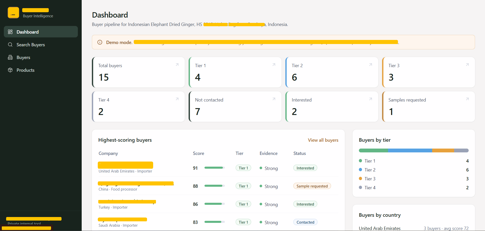
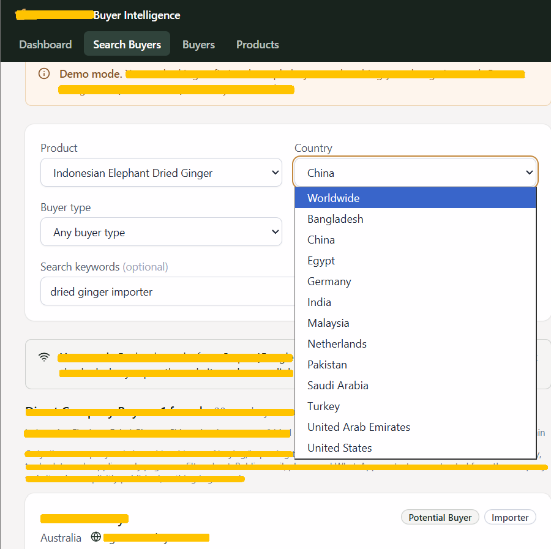
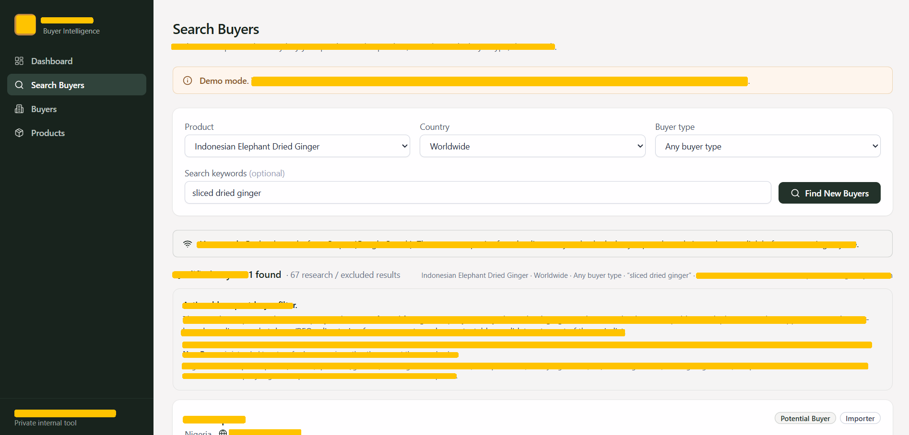
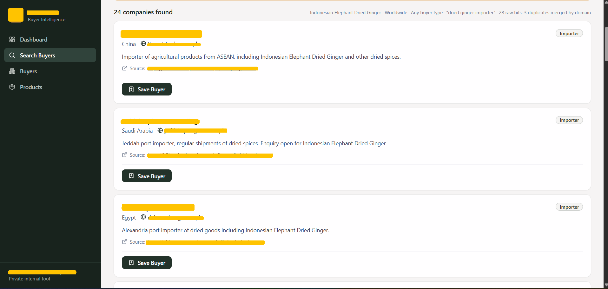

B2B Buyer Intelligence Platform
A B2B buyer discovery and qualification platform designed around the real-world problem of finding relevant international buyers for export products.
- Buyer discovery
- Company classification
- Evidence extraction
- Buyer scoring
- Qualification tiers
- Country analysis
- Contact enrichment
- Buyer management
- Outreach pipeline
Project focus: a private buyer research and qualification platform designed to help turn broad web research into more useful export prospecting. The development was AI-assisted, with the product and business requirements defined and refined through iterative testing.
The Problem
Finding international B2B buyers is more complicated than simply searching for companies. Public search results can contain relevant prospects alongside suppliers, marketplaces, directories, and low-confidence results. The product was designed to add a qualification layer before prospects are considered for outreach.
The Approach
The platform combines web research with a structured qualification workflow that evaluates relevance and supporting evidence before helping prioritize prospects. The exact search, qualification, and prioritization rules are intentionally kept private.
Product Capabilities
What I Focused On
Designing a practical workflow for separating useful prospects from noisy search results, handling uncertain cases, and presenting information in a way that supports human review and outreach decisions.
Quality & Evaluation
The project required repeated testing of relevance, evidence quality, edge cases, and instruction-following. Implementation details, internal rules, thresholds, and data-processing methods are intentionally not disclosed in this public portfolio.




Private project. Screenshots are presented for portfolio demonstration purposes. Sensitive company and buyer information may be anonymized.